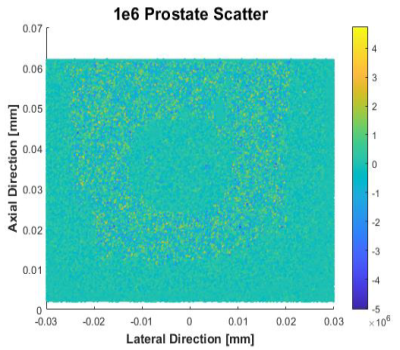

In Silico Data for Validation
To Verify any algorithms against known deformations, an In Silico data set was created using MATLAB, field-ii ultrasound simulations, MRI Images of an mimicking phantom, and Finite Element modelling of the prostate capsule to collect realistic displacements of the tissue. The scatterer map seen in the left shows the pre-compression state of the prostate capsule, simulated with 1 million data points. This map is then "scanned" using field-ii's simulated ultrasound scanner to produce radio frequency data that is useable in the displacement calculation algorithms.'